Data#
Informatica#
een taal leren \(\sim\) syntax (noodzakelijk, maar niet het punt)
… informatica studeren \(\sim\) semantiek (leren hoe machines denken!)
Een programmeertaal als Python leren heeft alles te maken met syntax waarmee je handelingen kan schrijven die een machine moet uitvoeren. Maar hiervoor heb je ook andere kennis nodig, kennis die alles te maken heeft met wat de machine (bijvoorbeeld, jouw laptop) doet.
Handelingen en data#
x = 41
y = x + 1
Laten we om te beginnen de volgende twee variabelen x en y ieder een waarde toekennen. Deze waarden (41 en 42) worden in het geheugen opgeslagen.
Achter het doek#
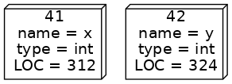
Stel je een variabele voor als een doos: de inhoud van de doos is de waarde (bijvoorbeeld 41 of 42 in ons geval) met extra informatie over het type van de waarde (een int wat staat voor integer, een geheel getal) en een geheugenlocatie (LOC).
Geheugen#
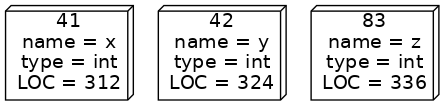
Geheugen is een hele lange lijst van dit soort dozen, elk met een naam, waarde, type en geheugenlocatie.
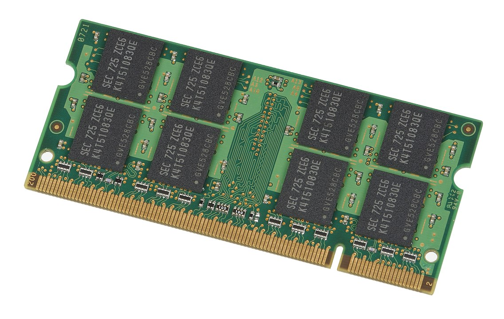
Random Access Memory (RAM) is waar variabelen worden opgeslagen, een kaart zoals je deze hier ziet zit ook in jouw computer! Als je het zwarte materiaal voorzichtig zou weghalen zal een (microscopisch klein) raster zichtbaar worden.
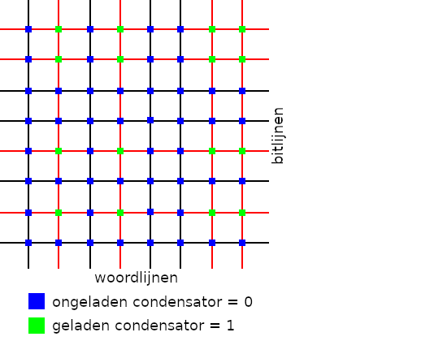
Horizontaal zie je de bitlijnen, of adresregels (de geheugenlokatie) en verticaal de woordlijnen (of dataregels). Elk kruispunt is een condensator die elektrisch geladen of ongeladen kan zijn.
Bits#
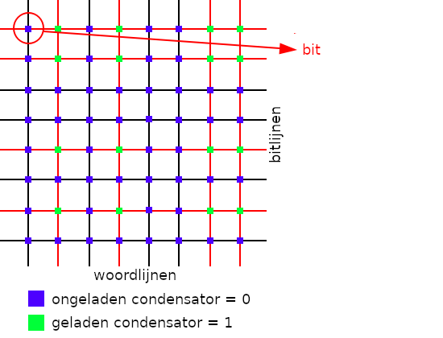
Zo’n punt (een condensator) dat geladen (1 of True) of ongeladen (0 of False) kan zijn wordt een bit genoemd. Dit is de kleinst mogelijk informatie-eenheid!
Bytes#
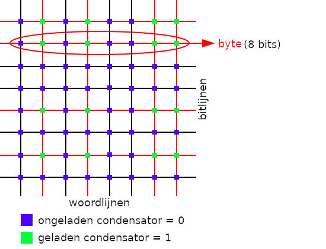
Je zal ook vaak horen over bytes en dit is een verzameling van 8 aaneengesloten bits op een adresregel. Waarom 8 en niet 5, 10, 12 of meer (of minder) zal je je misschien afvragen? Dit is historisch bepaald en heeft alles te maken met het minimaal aantal bits dat ooit nodig was om een bepaalde set van karakters (letters en andere tekens) te kunnen representeren, ASCII om precies te zijn.
Decimale computers#
Grondtal 10 m.a.w. decimaal stelsel of ook wel bekend als tientallig stelsel.
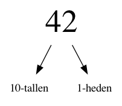
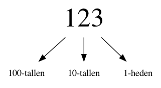
Computers werken op stroom 😱
Dus moet je je getallen representeren met voltages.
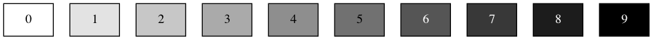
Dat is lastig, zeker op schaal: welke waardes zijn dit bijvoorbeeld?
Binaire computers#
Binaire getallen maken dit veel makkelijker:
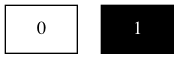
Kijk maar:
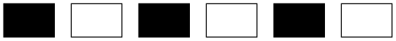
Binair stelsel#
Van rechts naar links representeert elk binair cijfer een steeds grotere macht van 2.
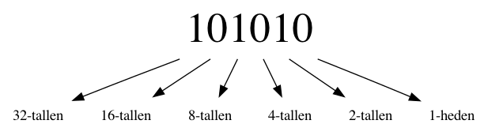
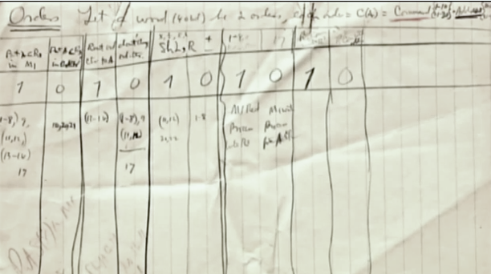
Decimale getallen omzetten naar binaire getallen#
Stel we willen het getal 141 van decimaal naar binair omzetten
De eerste stap is lastig als we van links naar rechts omzetten. Waarom?
Omdat we niet weten bij welke macht van twee we moeten beginnen!
Een betere aanpak: van rechts naar links!#
Wat zou de meest rechter bit van de binaire versie van 141 zijn?
En de twee meest rechtse bits?
Alle machten van twee, behalve 1, zijn even! (Waarom?)
141 is oneven, dus moet de laatste bit een 1 zijn! Die stelt immers de eenheden voor.
Een algoritme!#
We bouwen het binaire getal dus op van rechts naar links.
141 is oneven, dus laatste bit van 141 is 1. (141-1) / 2 = 70. 1
70 is even, dus laatste bit van 70 is 0. 70/2 = 35. 01
35 is oneven, dus laatste bit van 35 is 1. (35-1) / 2 = 17. 101
17 is oneven, dus laatste bit van 17 is 1. (17-1) / 2 = 8. 1101
8 is even, dus laatste bit van 8 is 0. 8 / 2 = 4. 01101
4 is even, dus laatste bit van 4 is 0. 4 / 2 = 2. 001101
2 is even, dus laatste bit van 2 is 0. 2 / 2 = 1. 0001101
1 is oneven, dus laatste bit van 1 is 1. 10001101
Binaire code van 141 is 10001101
Hoe zijn gegevens opgeslagen?#
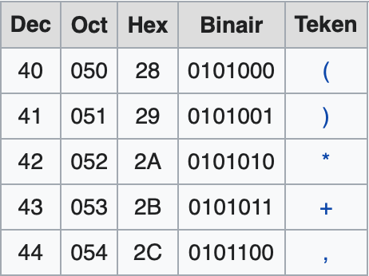
Dezelfde bits kunnen een andere waarde representeren, afhankelijk van het type!
Laten we eerst kijken hoe karakters worden gerepresenteerd door een computer. De computer kent alleen maar bytes (8 opeenvolgende bits) dus hoe kan het karakters als A, B en C opslaan? Dit kan een computer niet en er is een vertaaltabel nodig om van bits naar karakters te komen en vice versa. De ASCII tekenset is zo’n vertaaltabel.
ASCII#
American Standard Code for Information Interchange
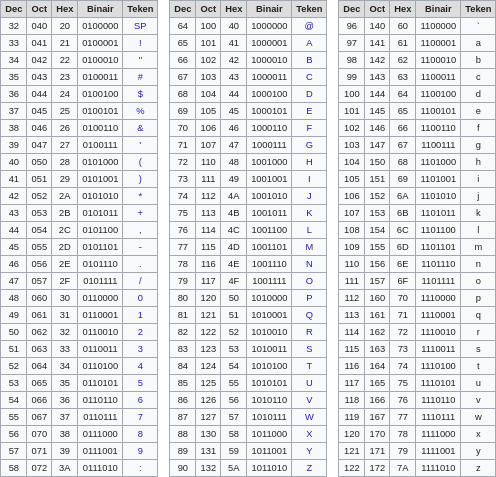
Je zult later zien dat je decimale getallen kan omzetten naar een binaire representatie en in dit voorbeeld staat 67 decimaal gelijk aan 1000011 binair (bits!). Het karakter dat volgens de tabel bij deze waarde hoort is het karakter C.
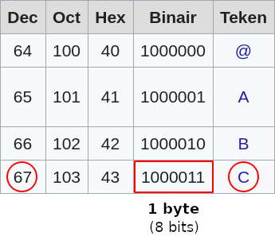
Je ziet dat dezelfde bits zowel een integer (decimaal) of string (teken) kunnen representeren, afhankelijk van het type: int of str. Anders gezegd, het type bepaalt of de binaire waarde (de bits) een getal vertegenwoordigen waar bijvoorbeeld mee gerekend kan worden of een karakter dat op scherm kan worden geprint: het type bepaalt de context van gebruik.
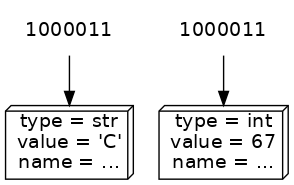
Denk terug aan de “dozen” die we hebben gebruikt om een voorstelling te maken van wat zich in het geheugen van een computer afspeelt en met wat we nu weten kunnen we dit beeld gaan aanpassen. De “inhoud” van een doos zijn de bits, zoveel is nu wel duidelijk. De inhoud van verschillende dozen kan hetzelfde zijn maar het type bepaalt de representatie, bijvoorbeeld of het integer met waarde 67 of een string met waarde “C” is.
De naam van een waarde (variabele) maakt dus ook niet uit, je weet inmiddels dat je (bijna) elke naam voor een variabele mag kiezen en het is niets meer dan een verwijzing naar de waarde die voor jou betekenis heeft (en je zult misschien hebben gemerkt dat het kiezen van een betekenisvolle naam niet altijd eenvoudig is!).